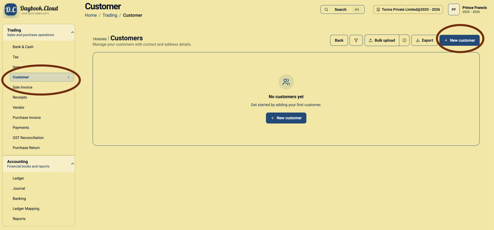
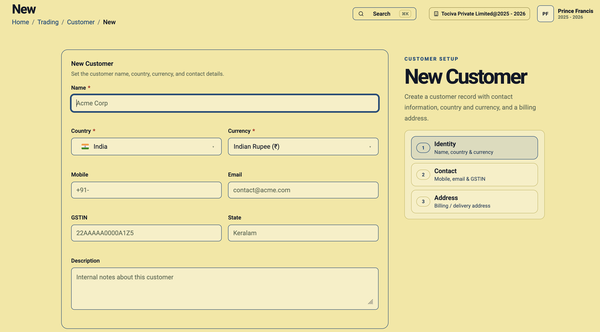
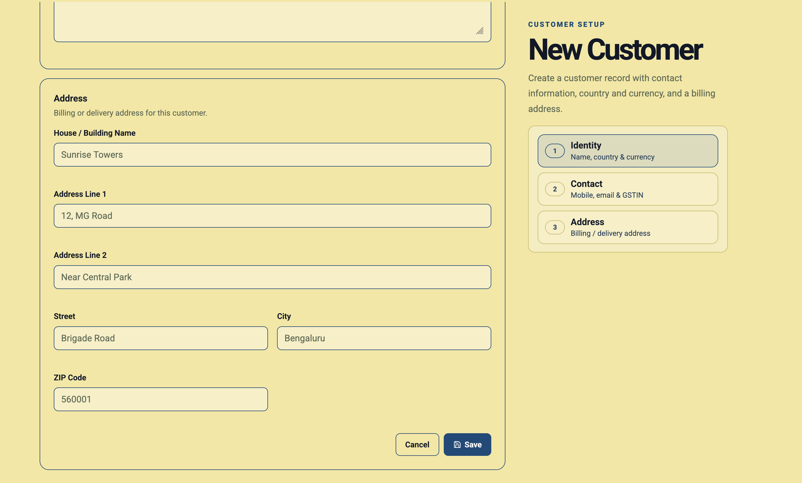

Customers do not always transact in your company’s home currency. A business in India may invoice a local customer in Indian Rupees, a customer in the United States in US Dollars, and a customer in Europe in Euros.
Daybook.Cloud lets you select a currency for each customer while creating the customer record. This keeps the customer’s currency preference alongside their identity, contact information, tax details, and billing address.
Why customer-level currency matters
Assigning currency at the customer level gives your team a consistent billing context for every customer:
- Local and international customers can use different currencies.
- The customer’s expected billing currency is recorded in one place.
- Teams do not need to remember or re-enter the preferred currency for every transaction.
- Customer records remain useful even as the business expands into more countries.
Before you start
Keep these customer details ready:
- Name: The customer or business name.
- Country: The country where the customer is located.
- Currency: The currency in which you expect to transact with the customer.
- Contact details: Mobile number and email address.
- Tax details: GSTIN and state when applicable.
- Address: Billing or delivery address details.
- Description: Optional internal notes about the customer.
Step 1: Open the Customers page
Go to Trading and select Customer from the left menu. Click New customer at the top right. If no customers exist yet, you can also use the New customer button in the centre of the page.

Step 2: Enter the customer name and country
Enter a clear customer name and select the customer’s country. The country identifies the customer’s location, while the separate Currency field controls the currency associated with that customer.
Step 3: Select the customer’s currency
Use the Currency field to choose the currency in which you will normally transact with this customer. This is the key step for multi-currency customer setup.

Customer currency examples
- Indian customer: Select India and Indian Rupee (INR).
- United States customer: Select United States and US Dollar (USD).
- European customer: Select the relevant country and Euro (EUR) when billing in euros.
- Contract-specific billing: Choose the agreed transaction currency, even when it differs from your company’s home currency.
Confirm the currency before saving. Currency affects the financial meaning of customer transactions, so it should match the customer agreement and your accounting process.
Step 4: Add contact and tax details
Enter the customer’s mobile number and email address. For customers registered under GST, add the correct GSTIN and State. Leave tax-specific fields blank when they do not apply, subject to your accountant’s guidance.
Step 5: Add internal notes
Use the Description field for information your team may need, such as the billing contact, payment arrangement, preferred invoice reference, or other customer-specific notes.
Step 6: Enter the billing or delivery address
Complete the address using the house or building name, address lines, street, city, and ZIP or postal code. Accurate address information helps keep invoices and delivery records complete.

Step 7: Review and save the customer
Before clicking Save, verify the customer name, country, currency, tax details, and address. The customer will then be available for supported invoices and transactions.
Multi-currency setup checklist
- Select the customer’s actual country.
- Choose the agreed billing currency for that customer.
- Do not assume every customer uses your company’s home currency.
- Verify international customer currencies before the first invoice.
- Add GSTIN and state only where they apply.
- Keep contact and billing address details complete.
- Review the currency carefully before saving.